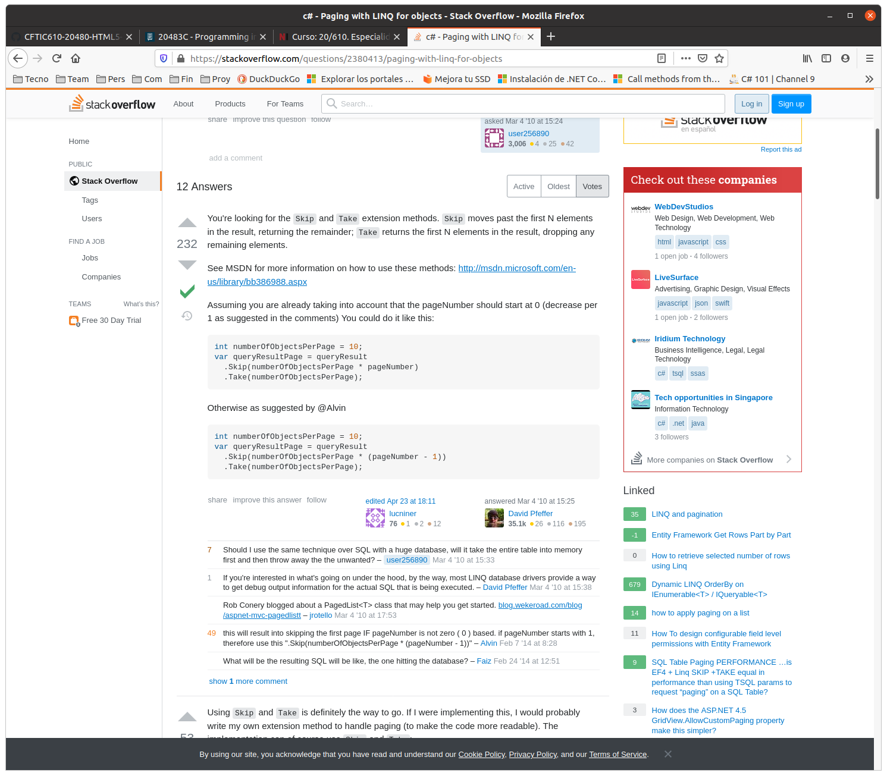

QUESTION 258 --> OJO, ES DE C#
You have an application that uses paging. Each page displays five items from a list.
You need to display the second page.
Which three code blocks should you use to develop the solution? To answer, move the appropriate code blocks
from the list of code blocks to the answer area and arrange them in the correct order.
Codes:
A. .Take(1)
B. .Skip(2)
C. .First(5)
D. .Skip(5)
E. .Skip(1)
F. .Take(5)
G. var page = items
H. int page = items
SOLUCION en el pdf
1. int page = items
2. .Skip(5)
3. .Take(5)
OJO, a la vista de la web de la referencia, es posible que la solución correcta sea con 1. var page = items
Section: Volume B
Explanation/Reference:
References: https://stackoverflow.com/questions/2380413/paging-with-linq-for-objects
En esta web:

Observar: See MSDN for more information on how to use these methods: http://msdn.microsoft.com/en-us/library/bb386988.aspx
Aparece:
Use the Take operator to return a given number of elements in a sequence and then skip over the remainder...
(Test es un método de la clase Queryable que implementa el interface IQueriable del namespace System.LinQ)
Use the Skip operator to skip over a given number of elements in a sequence and then return the remainder...